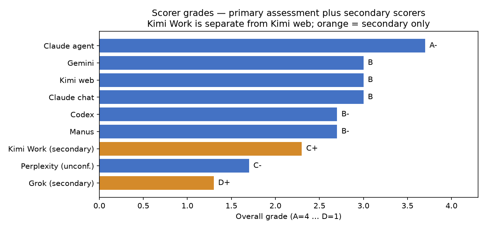

ADVERSARY-02: a pre-registered test of CAMS
Fifteen predictions, written and sealed before scoring, about China and seven Chinese companies for 2021–2024
Results are for the primary pool (7 scorer-runs, 20 passes) unless stated. Everything here is reproducible from the files in analysis/adversary_02/part2/. Interpretation is labelled as interpretation.
Before looking at any data for 2021–2024, I wrote down 15 predictions from a model of how societies and organisations work, and sealed them. Then nine scorer-runs rated China and seven companies for those years; seven runs form the primary pool, with Grok and Kimi Work reported separately. Six predictions passed and nine failed. The model’s one built-in kill-switch was not triggered, so it survived this test. That is not proof that it is right.
The headline wins
1. What is CAMS, for readers who have not met it?
CAMS (Complex Adaptive Model of Societies) treats a society, or an organisation, as a small system of eight functional parts, called nodes. Each node is scored every year on four measures. Here are the definitions used in this experiment, as set out on the Canonical Definitions page:
- C: Coherence
- How well aligned and coordinated the node is within its own function.
- K: Capacity
- How well the node actually performs its function.
- S: Stress
- How fast disorder is being produced inside the function. It is not how hard the outside challenge is.
- A: Abstraction
- How well the node’s ideas and symbols are tied to what it actually does. High A means sophisticated and grounded. Ideas that have drifted away from reality score low.
An entity is the thing being scored: here, China as a country plus seven companies. China’s eight nodes are Helm, Shield, Lore, Stewards, Craft, Hands, Archive and Flow. The companies use Board, Risk, RD, Finance, Operations, Workforce, Brand and Markets, which the experiment maps onto the same eight positions (the mapping is provisional and unapproved).
Scorers give only the four raw measures. Everything else is computed afterwards, centrally:
- Node value, V = C + K − S
- One number per node-year. M is the mean of V across an entity’s eight nodes, the entity’s overall health in a year. Note: this experiment’s sealed rule has no A term. The Canonical Definitions page defines V with an extra A/2, so M values here are not directly comparable with V on other pages of this site.
- Bond strength
- How tightly pairs of nodes are tied together, driven by their coherence and abstraction and damped by their joint stress.
- Energy = K − S
- Capacity left over after stress. Below zero, an entity is spending more than it can sustain.
- Focus = A × C
- How clear and well joined-up the entity is. Energy and focus together give each entity a “personality”: a position on a two-axis map.
2. How the test worked
- Pre-registered. The 15 predictions, with numeric pass/fail thresholds, were drafted, then signed by me on 4 November 2026 at 21:28:58 AEDT, before the 2021–24 scoring. The signed file is
predictions_SIGNED.md(SHA-256e15e1198…fb28; the manifest that lists it hashes to766a1cbd…be6b; the scoring table misprints it as …fe6b). - Scored by AI, not by me. Nine scorer-runs were collected: the original eight (Claude agent, Gemini, Kimi web, Claude chat, Codex, Manus, Perplexity and Grok), producing 23 passes, plus Kimi Work, producing five. Each pass covers 8 entities × 4 years × 8 nodes. Scorers could use only information available by 30 June of the following year.
- Pooled fairly. Within each run the passes are averaged first, then every run counts equally, so a scorer with more passes gets no extra say. The primary pool remains 7 runs and 20 passes. Grok and Kimi Work are secondary only because of their scorer assessments (see below). Kimi Work is a separate run, not a replacement for Kimi web. Perplexity’s attribution is unconfirmed, so results are also shown without it, and without Manus.
- Fixed comparison. Headline pass/fail uses the primary pool and primary thresholds only. Looser secondary thresholds are shown for information and never change a headline verdict. Kimi Work pools (e) and (f) are supplementary sensitivity analyses using primary thresholds.
- A kill-switch. Failure Condition 5 (FC5) would trigger if 3 or more of P1, P3, P4, P5 failed in the primary pool.
3. Scoreboard: all 15 items
6 of 15 passed; 9 failed. Across pools (a)–(d), verdicts were identical except P6, P7 and P8. Each of those fails in the primary pool but passes in at least one alternative pool (P6 with Grok added or Manus removed; P7 and P8 with Grok added). The Kimi Work sensitivity adds two primary-threshold pools: adding it (pool e) flips P6 and P8 to PASS (P6 14/16; P8 ratios 5.03/5.99, limit 5.0); using it in place of Kimi web (pool f) flips only P8 (5.08/5.94), while P6 stays FAIL (13/16). This is a knife-edge sensitivity, not a change to the published primary verdicts.
| Item | The sealed call, in plain words | What the data showed | Result |
|---|---|---|---|
| P1 | Evergrande loses viability: mean node value (M) at or below 5.0 in every year and at or below 4.0 in 2024 | M ran −3.2, −4.2, −5.4, −6.3 for 2021–24, falling every year | PASS |
| P4 | BYD preserves: 2024 M at or above 7.2 and no year below 6.5 | M ran about 10.0, 11.4, 11.8, 11.5 | PASS |
| P5 | CATL preserves with strong internal bonds: M at or above 8.3 each year and bond strength at or above 23.1 | M 11.6–11.8 each year; bond strength 38.0 → 39.1 | PASS |
| P10 | Longfor is the comparator furthest from Evergrande (further than Vanke) | Distance to Longfor 4.05, to Vanke 3.31. All 7 runs agree | PASS |
| P12 | Policy shocks do not transmit between entities: none of 8 events scores 2 or more | All 8 events scored 0. All 7 runs agree | PASS |
| C2 | Huawei’s slide reverses: 2024 M above its 2020 value of 7.39 | M = 11.3 in 2024 (also clears the stricter 8.67 margin version) | PASS |
| P2 | Evergrande keeps the same weak spots (Stewards and Shield lowest) in at least 3 of 4 years, under four conditions | All four conditions held in only 1 of 4 years; the lowest node in 2024 was Archive | FAIL |
| P3 | Huawei reorganises: M stays below 9.15 every year | M ran 8.1, 8.2, 10.9, 11.3: above the ceiling in 2023 and 2024 | FAIL |
| P6 | Stewards or Shield is the weakest node in at least 14 of 16 company-years (four primary companies) | 13 of 16 in the primary pool; 14 of 16 when either Grok or Kimi Work is added. Replacing Kimi web with Kimi Work leaves 13 of 16 | FAIL |
| P7 | Bond-strength gap between Evergrande and its comparators stays at or above 10.0 every year | Gap shrank 22.1, 19.5, 13.6, 8.2. Passes only under the looser secondary threshold (8.0) | FAIL |
| P8 | Evergrande stays far from Vanke and Longfor relative to how close those two are to each other (both ratios at or above 5.0) | Ratios 4.35 against Vanke and 5.32 against Longfor. Pool b passes under its looser 3.5 threshold; adding Kimi Work passes by a hair (5.03/5.99 against 5.0), as does replacing Kimi web (5.08/5.94) | FAIL |
| P9 | Huawei and SMIC converge: M within 1.5 of each other every year | Gap 0.13, 0.24, 3.30, 2.73: they diverged from 2023 as Huawei recovered | FAIL |
| P11 | Vanke (at or above 7.49) and Longfor (at or above 8.66) hold their level every year | Vanke M 8.9, 7.7, 4.5, 1.2. Longfor 10.7, 8.1, 7.1, 6.1 | FAIL |
| C1 | China’s 2024 M rises clearly above its 2020 level (at or above 9.30) | 7.36 | FAIL |
| C3 | BYD’s stress rises (2024 at or above 5.54) while M holds | Stress 4.11: it did not rise | FAIL |
Full detail, all six pools, per-scorer verdicts and sensitivity runs: scoring_table.md and scoring_table.csv. In the per-scorer table, P is pass, F is fail and I is indeterminate: where a scorer left too many cells blank to decide an item, it is marked I, not F.
4. Did CAMS survive, and why?
FC5 was not triggered, in any of the six reported pools, including both Kimi Work sensitivity pools. Of the four core predictions, three passed (P1, P4, P5) and only P3 (Huawei’s “reorganise, then stabilise” call) failed. So by the rule written down in advance, CAMS survived this test.
The model’s main structural calls held up: it said which entity would break (Evergrande), which would hold (BYD and CATL), and that shocks would not spread between entities. Its finer predictions about the detailed shape of change did worse. Surviving a test is not the same as being proven right.
5. The “personalities”: where each entity ended up
Placing each entity on the energy and focus axes turns the raw numbers into a map. The dashed lines split it into quadrants. Energy 0 is a natural line. The focus line at 30.25 (5.5 × 5.5, the product of the scale midpoints) is an analyst’s choice, not part of the sealed predictions, and moving it would move entities that sit near it, Longfor especially.
Interactive: switch between the map and the two time series, toggle entities, and optionally add the 2010–2020 baseline from Part 1.
| Entity | 2021 energy / focus | 2024 energy / focus | What the 2024 data show |
|---|---|---|---|
| Evergrande | −5.9 / 8.7 | −7.8 / 2.5 | Low-energy, low-focus throughout; by 2024 its focus is almost gone. The direction Part 1 pointed, at a larger scale. |
| Huawei | 1.4 / 47.3 | 3.7 / 57.4 | Highest focus of any entity in 2024. Shield (protection) was its weakest node in 2023 and 2024. |
| CATL | 4.0 / 54.0 | 4.1 / 56.9 | Strong quadrant throughout; Lore (knowledge) its strongest node in 2024. |
| BYD | 3.0 / 46.8 | 3.9 / 55.6 | Strong quadrant throughout; Lore strongest in 2024. |
| SMIC | 1.8 / 40.5 | 1.9 / 43.6 | Strong quadrant throughout; Lore strongest in 2024; Shield weakest. |
| China | 2.3 / 41.8 | 1.3 / 37.5 | Energy stayed between 0.4 and 2.3; focus eased from 41.8 to 37.5. |
| Longfor | 3.5 / 44.2 | 0.3 / 32.8 | Drifted toward both lines. In 2024 only 2 of 6 scorers who could score it put it in the pooled quadrant. |
| Vanke | 2.4 / 38.6 | −3.0 / 19.4 | Dropped into the low-energy, low-focus quadrant from 2023. |
Values: primary pool, from entity_personality_entity_year.csv. Evergrande’s 2024 point rests on 4 scorable runs; the other entities on 6 or 7.
6. Who scored best
The scorers were not equal, and the assessment of them is part of the evidence. Grades come from scorer_assessment.md: five criteria (reliability, rule compliance, independence, calibration, and discipline over blank cells), equal weight. They are judgments from the evidence, not measurements of truth, and the pool they are compared against is not ground truth either.

- Claude agent, A−: the most repeatable, and closest to the pool.
- Gemini, B, Kimi, B, Claude chat, B: sound levels, with specific issues noted (an impossible timestamp for Gemini; two noticeably different passes for Kimi; a disclosed bit of context for Claude chat).
- Codex, B−: consistent and compliant, but left 52% of corporate cells blank. Manus, B−: well isolated and candid, but the harshest scorer.
- Kimi Work, C+ (secondary): clean format and honest blanks, but its five passes shared one evidence pack, which fails the independence protocol despite honest disclosure. Its pairwise repeatability was r ≈ 0.912 and carry-forward 18–28% (the lowest), but it leaned harshly on strong firms (CATL −2.37 V, Huawei −2.03, SMIC −1.77, BYD −1.49). It is reported as sensitivity only; its claimed model name,
k2d8-preview, is unverified. - Perplexity, C− (attribution unconfirmed, no run note) and Grok, D+ (carried most cells forward unchanged). Both Grok and Kimi Work are outside the primary pool.
7. Limitations
- Outcome knowledge. The scorers are AI models working from memory or web search, and they know how events turned out. So did the AI that drafted the predictions (every prediction is tagged for this in Section 7), and the choice of contrast themes was made after the 2010–2020 results were visible. The pre-registration protects against moving the goalposts. It cannot certify that hindsight was absent.
- Most passes are “no change” calls. See the caveat in section 4.
- A method seam at 2020/2021. Part 1 (2010–2020) and Part 2 (2021–24) were scored by different scorer sets in a different prompt era. The step from 2020 to 2021 is a seam, not a finding.
- The quadrant lines are a choice. Energy 0 is natural; focus 30.25 is not part of the sealed predictions.
- Levels versus rankings. Scorers agree on how entities rank more than on exact levels, which varied scorer to scorer. Rank correlations against the pool ran 0.81–1.0 for the six runs with full entity coverage; Codex scored too few entities to compute one.
- Different definition of V. This experiment’s V = C + K − S (no A term), as sealed. The Canonical Definitions page defines V = C + K + A/2 − S.
- Small, uneven grids. Perplexity’s attribution is unconfirmed, a few scorers had partial blank grids, and Evergrande’s 2024 point rests on 4 scorable runs.
- Shared evidence in Kimi Work. All five passes read one shared evidence pack collected in November 2026; only passes 4–5 searched independently. China’s evidence came from one collector and included about a dozen memory-dated items. This limits independence and inflates the comparability of its repeatability statistic.
- Fifteen items, one sample. One experiment on one country’s firms. A single result like this should be replicated before it carries weight.
8. Files and reproduction
Everything is in analysis/adversary_02/part2/: the sealed predictions and manifest, the six-pool scoring table (scoring_table.md and .csv), entity-year personality data, scorer assessments, and reproduction scripts. The Kimi Work methods note and look report accompany slim derived files and its pass grids, not the full shared evidence pack. The complete run is ledger-filed under runs/part2/kimiwork/ (MANIFEST 95f9357d…), with central analysis under runs/part2/analysis_v3_kimiwork_2026-11-05/ (MANIFEST 4d3413ba…). The chart reads entity_personality_entity_year.csv, rounded to two decimals.
More CAMS papers and tools: Explore.